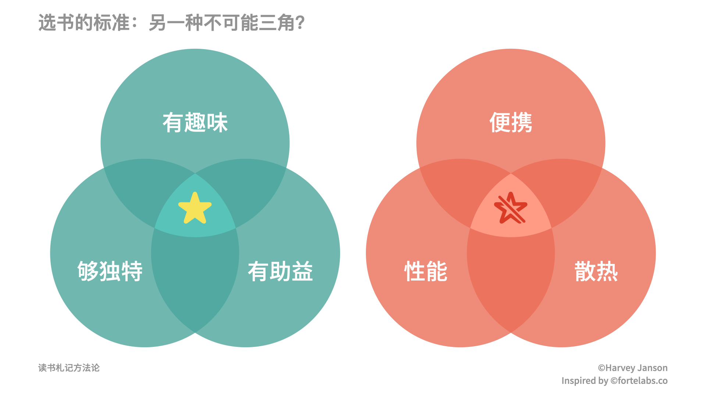
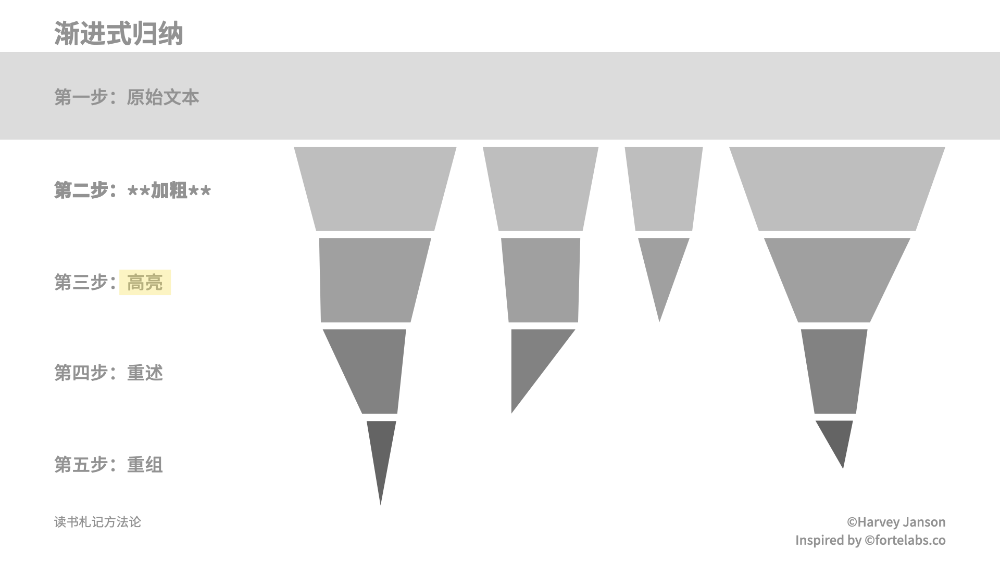
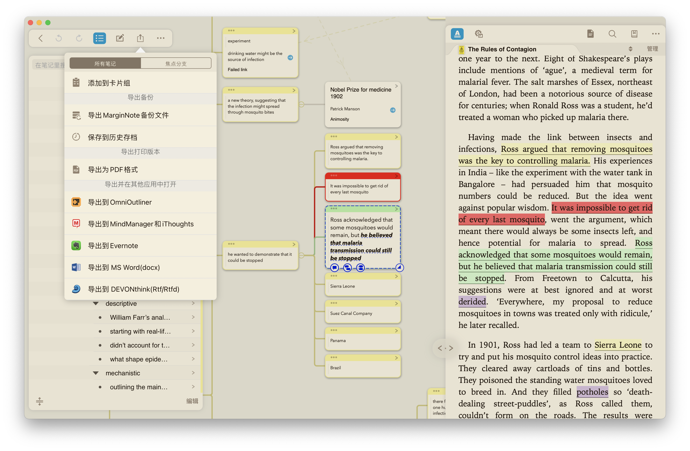

读书｜读书札记方法论
本文是对 Tiago Forte 的这篇文章 的整理。这篇文章无论是对自己的日常思考，还是真的着手写读书札记，都很实用，原本打算总结下来自用，看到王老师 @玉树芝兰 的文章中提到了，发现似乎少有人介绍，于是便整理下来，放到少数派（首发地）上，也算是实践了文章中的方法，有助于深入领会。
「读书破万卷，下笔如有神。」但现实往往是，书读得不少，笔记记得挺多，可读便只是读了、记便只是记了，混乱不堪，缺乏整理，到用时根本无从下手。破局之路有二，一是压减读书的规模，从原先多读、泛读，到少读、精读；二是将笔记与书剥离，单独放置，形成「读书札记」，便于检索。既然要写读书札记，就意味着将书本转化成为己所用的素材，因而，要运用创造力和主观能动性，要本着「一千个读者眼中有一千个哈姆雷特」的精神，从有意义、有效用、能执行的角度对原书进行阐释/解读（interpreting）。最终形成的读书札记，自然要切中肯綮，避免在繁复的论证过程上浪费笔墨。
写读书札记的好处
每篇读书札记，大约需耗时 10–20 小时（作者语，依个人情况而定），若能持之以恒，定能大有收获，要之有六，于己有关的细说，于己无关的少说。
帮助吃透书本内容。人们常说「带着目的阅读」，写读书札记也不失为一种目的。有了明确的目的，在标记重点时，也会有所取舍，从而培养筛选有价值信息、作出价值判断的能力。
为思考、创作提供素材。知识的输入服务于输出，输出依赖输入。但创作时，某个观点的出处，往往在脑海中只剩下一丝微弱的印象，若要从头找起着实耗费心力。但若能将读过的书中最核心、价值最高的要点总结出来，便如同有了一份核心要点的「索引」。长此以往，便能搭建出一个「知识网」，从任意节点均可切入，也能省去每次都介绍一番背景状况的麻烦。Roam Research（付费） / Obsidian（可免费） / Foam 等工具就是这样的思路。
通过仿写提升写作能力。仿写时模仿的不仅是字、词、句，还有原作者的思维模式。仿写也不是单纯的照抄，而是用自己的话解释（paraphrase），一方面可以提升自己的表达、写作能力，同时也能检验自己对知识掌握的程度，就像老师常说：「学到的知识，能用自己的话，把别人给讲明白了，那就是真的学会了。」
扩大读者群。
建立人脉。
提升互联网讨论中的话语权。
这三条和笔者没什么关系，就不细表了。简而言之，写得越多，就能吸引更多读者；说不定就能和原书作者牵线搭桥；在网上说话的时候也会更有分量，成为引述的源头、secondary source 的出处。
如何选材
选书如按图索骥，只是这「图」未必是 XX 畅销书单，毕竟畅销书早已被人翻遍嚼烂，造轮子意义不大；真正的「图」，应当包括落在自己兴趣边界上1的那些书。最终选出的书，应该满足有趣味（以便吸引读者）、够独特（方能增添新知）、有助益（才能解决问题）这三个标准，且以札记总结后，能为未来取用节省时间者，当为最佳。

写读书札记的过程，也是将书中知识、观点介绍给别人，在读者和书本之间牵线搭桥的过程。读者可能并不熟悉书中所涉知识领域，所以，札记的创作者还要担负起「大使」「翻译」2的职责，用读书札记拓宽读者视野，展现单凭自己无法涉足的未知领域。同时，既然要读的书都「落在自己兴趣边界上」，对自己的视野有所拓展，创作读书札记这一过程，也可以帮我们摆脱信息茧房，接收更多元的观点。
读书札记写作步骤
作者将写作读书札记的全流程分为五步，下面分别叙述。
第一步：阅读、标重点
读一本书大概需要 5–10 小时（作者语，依个人情况和具体书籍而定），就写作读书札记的目的而言，是时间成本最高的部分。为了一次通关，标注重点不可或缺。标重点这件事，其实争论挺大。一方面，它属于开头讲的「笔记记得挺多」的一种表现形式，如果简单划过去，那就毫无意义，甚至可能降低阅读效率；另一方面，边读边划本身就体现了读者的能动性，划重点能反映读者对书中内容详略与否的把握，锻炼读者获取关键信息的能力。读书时也就是动动笔、动动手指的功夫，不会扰乱阅读流。
作者推荐用 Kindle 阅读电子书。（按：这篇文章以阅读电子书为前提。纸质书在原理上互通，但时间等因素可能会有差异。）Kindle 虽然写批注体验极差，但划重点还是可以的，导出的体验也不错，配合 Klib、Knotes 等第三方解决方案更是如虎添翼。如果不是特别在意墨水屏的观感，用智能手机上的 Kindle app，体验可以上升一大截。除此之外，Apple 全家桶用户也可以用「图书」（原 iBooks），但一来格式上仅支持 epub 和 PDF，二来这 app 年久失修，划重点时会非常飘，导出也不太方便。
标重点需要参照前文提到的三个标准。这三条虽然说起来简单，但做起来实属不易。读起书来，总会有「我全都要」这种鳌拜上身的感觉，整段整段地划，得不偿失。为克服这一问题，作者给出了几条经验之谈：
- 要标的：
- 章节标题，方便把握脉络；
- 列表、摘要，直接拿来利用；
- 热门标注（Kindle 专享），他人劳动成果。但热门标注中，有的标注让人完全摸不到头脑，有的可能还不符合下文「已经了解的观点」这一条，需要仔细筛选，不能照单全收。
- 不要标的：
- 整段整段的文字，不然根本分不出重点；
- 整篇整篇的事例，不过是论述用的手段；
- 已经了解的观点，不然不符合三条标准。

第二步：导出重点
阅读器/阅读 app 的问题就在于，笔记不导出，等于没有记。前文提到过 Klib、Knotes，作者还给出了 Readwise（付费）和 Bookcision（免费）两款服务，用来导出 Kindle 上的笔记。这两款笔者没用过，就不妄加评价了。笔记导出后，可以放到
- Evernote/印象笔记
- Microsoft OneNote
- Bear
- Notion
- 前文提到的 Roam Research / Obsidian / Foam
等服务中，以备下一步使用。
第三步：渐进式归纳（Progressively summarize）
虽然手头有已经导出的笔记可用，但这些笔记毕竟是抽离了具体语境的只言片语或框架结构，若要令其有用武之地，就有必要增添内容，但这又需要在简洁和易懂之间取得平衡。为实现这一目的，本文作者提出了「渐进式归纳」（视频、文章）的概念，下面简述之。

渐进式归纳将归纳过程分为五步：
- 输入原始文本，也就是前述「导出重点」这一步。
- 加粗重要部分，主要是传达核心思想的关键词句。这一步需要处理大量的文本，且加粗操作在移动端需要的步骤可能过于繁琐（以 iOS / iPadOS 为例，选中 -> BIU -> 粗体，全都需要悬腕操作），建议在 PC 上进行。加粗处理也是一个回顾全书内容的过程，即便在此过程中，发现这本书不值得写成札记也没有关系，可以留存备考。
- 高亮加粗部分中的重要部分，精益求精。这一步操作在作者看来，算是一种被动行为，最好在移动设备上进行，当作消遣，比如夜深人静，忙完一天的工作，往沙发 / 床上一靠，拿起 iPad 标标点点。建议在前一步使用的服务中进行，省得来回来去倒腾东西。由于过这一遍时仅关注最核心的点，所以很轻松就可以将篇章上相距甚远，但意旨无比接近的内容关联起来，有助于进一步提炼、精简书本内容。
- 在对应条目的上方，用自己的语言重述加粗、高亮的观点。
- 对某些值得外延 / 可以外延的内容，借助 Roam Research / Obsidian / Foam 等工具，整合关联观点，进行重组。
总的来说，这五步是先按照「关键段—关键句—关键词」的步骤，先进行知识的输入，最后加上结合其他知识的输出。这其实就是上学时老师讲「先把书读薄，再把书读厚」的过程，先提取要点，再在要点的基础上扩充内容、建立联系。这五步务必放慢节奏，多利用碎片时间，甚至每步之间间隔上一段时间，才不至于被同样的信息反复轰炸，以致失去重点。
第四步：整理大纲
整理大纲，就是要将前面提取出来的信息点重新排布，将别人的文本彻底转化成自己的文本。这一步仍然是一个去芜存菁的过程，要把最值得写的点精选出来，且最好一气呵成，一次性对比所有提取出来的要点，这样才好在点与点之间建立联系。列出的大纲遵循树状结构，以本文为例，大概就会是这样：
- 写读书札记的好处
- 好处一
- 好处二
- ……
- 读书札记写作步骤
- 第一步：阅读、标重点
- 第二步：导出重点
- ……
- 读书札记的意义
- 意义一
- 意义二
- ……
第五步：写作
完成了前面那些，终于到了正式写作的过程了。有了前面那些的积累，就不必再为概念性、结构性的东西纠结，剩下的就是按照自己的节奏，挥洒自己的创造力了。
写作时仍然要注意遵循写作的一般原则，即易懂、简明。除此之外，还要注意略去冗长的例子，代之以简明的例子，如果是自己发掘、亲身体会的事例，则为更佳；慎用大段的直接引用，否则「札记」便成了「书评」3。
读书札记的意义
除去前面写到的六点好处，读书札记在作者看来还有一大意义，就是用有深度的思考，克服「信息爆炸」（”Infodemic”）的冲击。我们每天接收到的信息确实比以往更多，但多是未经咀嚼、囫囵吞枣。东西再好，也终究是「别人家的东西」，还是二手的，难以为我所用。读完一些东西，写上一篇这样的札记，便是一个梳理的过程，是对 content curation 的 content curation，是对各种「N 大方法」的进一步提炼和向外延伸：提炼是在繁杂中捕捉精髓，延伸是跳出原文的框架束缚，主动迎接新观点的产生、观点之间的碰撞。
文后复盘和感想
这篇文章第一次实践，很多时间都浪费在找外围资源上；大多数引用都是纯靠记忆和巧合，以及一点模糊的印象，导致许多附加的评论空洞无物。由于所处行业并非码字为生、产出内容，所以对于其中的一些点（例如以整理各种「N 大方法」为主业）缺乏共鸣。总的来说步履维艰，且因为工作原因，战线越抻越长，到了最后几乎失去了开始创作时的那种热情，所谓「万事开头难」是也。所幸毅力傍身，还是把这篇文字勉强拼凑齐了。
完成这篇习作时，遇到的第一个劝退点，是在知乎上纯粹偶然遇到了这么个问题：阅读一本书可不可以只看别人整理出来的思维导图？下面回答的主流观点是「没有必要」，笔者一开始的想法亦然，又想到读书札记何尝不是一种思维导图，就顿生退缩之意。但又细细一想，思维导图与本文所指的读书札记还是有区别。思维导图不过是抽干了论述过程的论点集合，用具有逻辑的方式呈现出来，本质上是装饰更精美的目录，说句难听的，不过是空架子一具。这样的东西，读与不读真的没有区别4。读书札记（或至少本文所构想的「读书札记」）则需要创作者积极思考、主动出击，撷取书中虽有价值的内容，以不那么干瘪，甚至是非常生动、直观的语言呈现出来，并加上与其他文外内容的联系。其耗费的心力、具有的价值，自然同单纯的思维导图不可同日而语——当然，前提是真的能维持统一标准，持之以恒。
第二个劝退点，在于思考如何在自己的操作流中，实现作者描述的那几个步骤。笔者基本不用 Kindle，虽然远离了糟糕的批注体验，但同时也与便捷的导出体验作揖告别。看完作者关于联系、标注等的论述，笔者脑海中蹦出来的首选工具，是 MarginNote 3：有纯阅读视图，在页边做标记；有脑图视图，方便整合逻辑、构建联系；有大纲视图，可以保证树状结构，且大纲视图和脑图视图联动，还省去了单独生成一次生成树状结构的麻烦。此外，笔者读的书，大多只有 PDF 版，Kindle 的 PDF 阅读体验路人皆知，而 MarginNote 对 PDF 的支持相当可以，扫描版也能用 OCR 搞定。

但相较网络式笔记工具，MarginNote 3 缺乏跨学习项目（「笔记本」）的关联方式，若想在不同文档、记录之间构建联系，就非得将不同的文本放在一个项目中，长此以往，必定会导致项目臃肿不堪，管理起来也非常费劲。惟今之计，非得用上 Roam Research 之类的解决方案不可。
第三个劝退点，在于自己读的书，未必适合作者给出的这套流程。之前读 After the Babel 的时候就犯了「在事例上兜圈子」的错误（见前文 OneNote 截图）。但它的事例写得太好了。其实这也是一对矛盾：如果作者想要表明的观点就隐藏于事例中，不探讨事例，就无法阐明作者观点，该怎么办？本文作者举了些自己写过札记的「书」，都是些较「功利」5的，如：
- The Complete Guide to Landing a Book Deal
- How To Take Smart Notes: 10 Principles to Revolutionize Your Note-Taking and Writing
- The Body Keeps the Score: Brain, Mind, and Body in the Treatment of Trauma
- Pleasure as an Organizing Principle
- How Emotions Are Made: The Theory of Constructed Emotion
- Emergent Strategy: Organizing for Social Justice
- You Need a Budget: 13 Parallels Between Money and Productivity
- A Pattern Recognition Theory of Mind
- Trekonomics: The Economics of Post-Scarcity
- Supersizing the Mind: The Science of Cognitive Extension
- The World Beyond Your Head: How Distraction Shapes Who We Are
- The Inner Game of Work: Focus, Desire, and Working Free
- Strategically Constrained: How to Turn Limitations Into Opportunities
- A Theory of Unlearning: Ecstasis, Anamnesis, Kenosis
充斥着「How to」「Guide」「Principle」「Emotion」「Smart」「Mind」「Inner」之类的鸡汤标签6，其实也已经非常「畅销书单」7了，这又何尝不是一种对自己的背叛呢？读这样的书，确实可以按照作者的流程，写出一篇吸引人来看、还能变现的文字，书评也好，札记也罢。或许非「功利」的书，天生就不适合这样的流程，也未可知。不过回头想来，5–10 个小时看完 After Babel 这样的书，想想就不可能。
但话说回来，这世上本就没有完全量身定制的东西。要想为己所用，或者削足适履，强行改变自己的习惯，套用别人的东西；或者批判继承，取彼之长补己之短，在关键节点上就着自己的习惯稍做改造，说不定也能打开一片全新的天空。与笔者个人而言，也算是为这类网状结构笔记工具设想过一些使用情景，结合这篇文章，似乎也是时候试一把了。
Tiago Forte 的系列文章和视频的确是不可多得的宝藏，特别是其中关于工作流的思考和实践。由于篇幅和精力所限，本文也只覆盖了「渐进式归纳」等方法论的冰山一角，有兴趣的读者，可以移步他的 博客 和 YouTube 频道 进一步了解。
欢迎将您的想法、评论、意见、建议发送至 harveyjanson@icloud.com，请注明「讨论」字样，我会尽量回复。
- 1.注：此处原文为「Instead of bestsellers, I look for books that are on the fringes of the topics I care about.」本文直译。推测作者本意，应该是指既与读者关心的话题有所牵连，又能在此基础上有所拓展的书，否则尽读些熟悉领域的书，始终无甚长进。 ↩
- 2.作者用了「大使」「翻译」这两个比喻，但笔者觉得结合上下文，中文语境下更合适的喻体应该是「科普作家」——特别是难度方面。就此而言，写读书札记若非为了变现，真的是「用爱发电」。 ↩
- 3.按《现代汉语词典》，札记：读书时摘记的要点和心得；书评：评论或介绍书刊的文章。就本文所介绍的「summary」而言，笔者个人认为「札记」更佳。「札记」强调摘记要点、记录心得，这与写作 summary 的要求、步骤相合。 ↩
- 4.个人理解。 ↩
- 5.个人理解。 ↩
- 6.个人理解。 ↩
- 7.个人理解。 ↩